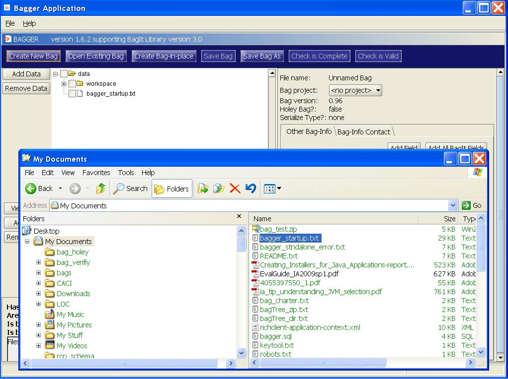
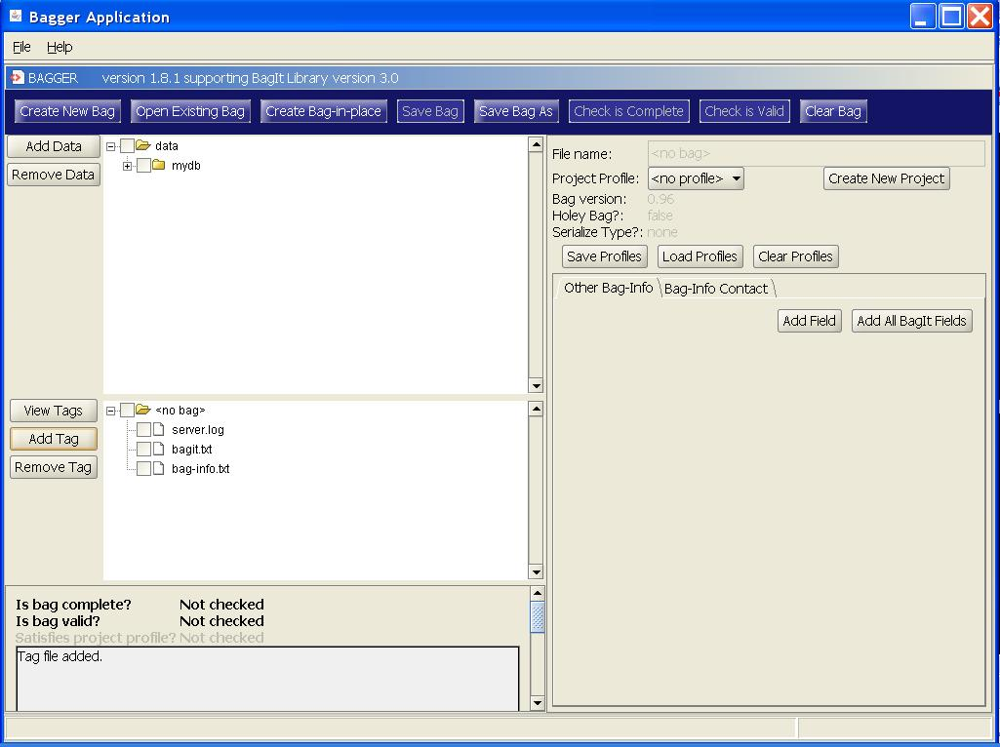
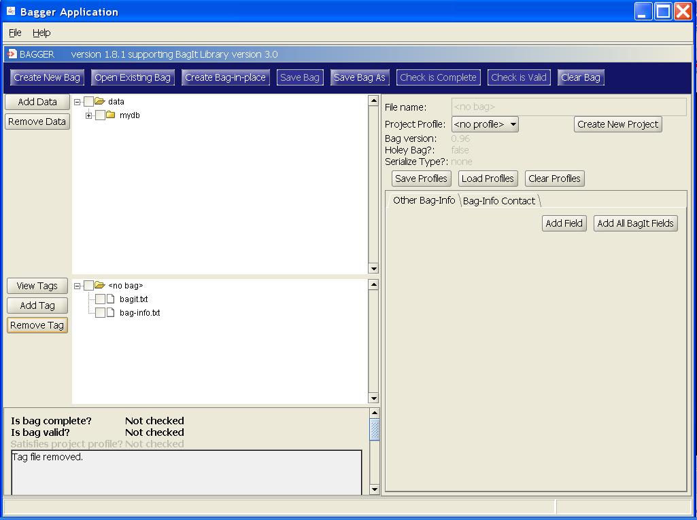

Home: Bagger User Guide: Payload and Tag Files
Adding/deleting payload files
Once you have a new bag or an open bag, adding files to the bag data payload or removing them from the bag data payload is easy and straight forward with the Bagger application. This can be accomplished by either selecting the Add Data or Remove Data buttons, or by utilizing your system’s drag-and-drop capability. The following state changes activate these buttons:
- Add Data: default disabled
- Enabled after Create New Bag selected
- Enabled after Open Existing Bag selected
- Enabled after Create Bag-in-place selected
- Enables Save Bag As button
- Remove Data: default disabled
- Enabled after Create New Bag selected
- Enabled after Open Existing Bag selected
- Enabled after Create Bag-in-place selected
- Add basic flow:
- 1. User provides files/directories to add to bag's payload. (User provides files/directories using a File/Directory picker or drag-and-drop.)
- 2. Application adds new files/directories to bag's payload.
- 3. Application adds new files/directories to display of bag's payload.
- Delete basic flow:
- 1. User selects files/directories from the display of bag's payload and request that they be deleted. (User selects files/directories from payload display and select Delete or drags-and-drops outside application.)
- 2. Application deletes files/directories from bag's payload.
- 3. Application removes files/directories from display of bag's payload.
Select the Add Data button to choose the first directory of files to include in the bag. A file and directory chooser dialog is displayed that allows the user to select multiple files and/or directories to be included in the bag. Go to the directory containing the files you would like to include in the bag, and then select the Open button to include them.

The window next to the ‘Add Data’ button now displays the hierarchical tree of files as they will be created within the bag data directory. Also, notice that if this is a new bag, the ‘Save Bag As’ button is now enabled. Now that the bag has had data content added it can be saved.


To remove payload data, first select the file or directory to be removed. Then select the ‘Remove Data’ button.


Likewise, you may also pick the file or directory to be removed and drag it off of the Bagger application screen. This will also remove the payload data from the bag.
Adding/deleting tag files
Once you have a new bag or an open bag, you can also easily add or remove tag files. This can be accomplished by either selecting the Add Tag or Remove Tag buttons, or by utilizing your system’s drag-and-drop capability. The following state changes activate these buttons:
- Add Tag: default disabled
- Enabled after Create New Bag selected
- Enabled after Open Existing Bag selected
- Enabled after Create Bag-in-place selected
- Remove Tag: default disabled
- Enabled after Create New Bag selected
- Enabled after Open Existing Bag selected
- Enabled after Create Bag-in-place selected
- Add basic flow:
- 1. User provides file(s) to add as tags. (User provides files using a File/Directory picker or drag-and-drop.)
- 2. Application adds new file(s) to bag as tags.
- 3. Application adds new file(s) to display of bag's tags.
- Delete basic flow:
- 1. User selects file(s) from the display of bag's tags and request that they be deleted. (User selects files/directories from payload display and select Delete or drags-and-drops outside application.)
- 2. Application deletes file(s) from bag's tags.
- 3. Application removes file(s) from display of bag's tag.
- Note: Any tag file may be deleted.
Select the Add Tag button to choose the tag files to include in the bag. A ‘Tag File Chooser’ dialog is displayed. Go to the directory containing the file you would like to include in the bag, and then select the Open button to include them.

The window next to the ‘Add Tag’ button now displays the hierarchical tree of tag files as they will be created within the bag base directory.

To remove payload data, first select the file or directory to be removed. Then select the ‘Remove Tag’ button.


Likewise, you may also pick the tag file to be removed and drag it off of the Bagger application screen. This will also remove the tag file from the bag.
View Tag Files
Once you have a new bag or an open bag, you can view the tag files contents. This can be accomplished by selecting the View Tags button. The following state changes activate this button:
- View Tags: default disabled
- Enabled after Create New Bag selected
- Enabled after Open Existing Bag selected
- Enabled after Create Bag-in-place selected
Upon selecting the View Tags button, a tabbed frame opens showing the currently added tag file contents displayed as read-only. The default tag files consist of:
- ‘manifest.txt’
- ‘tag-manifest.txt’
- ‘bag-info.txt’
- ‘bagit.txt’
- ‘fetch.txt’ (for holey bags only)

In addition there is a tab containing the non-tag listing of the data directory payload contents. For more information regarding tag files, refer to the BagIt specification.